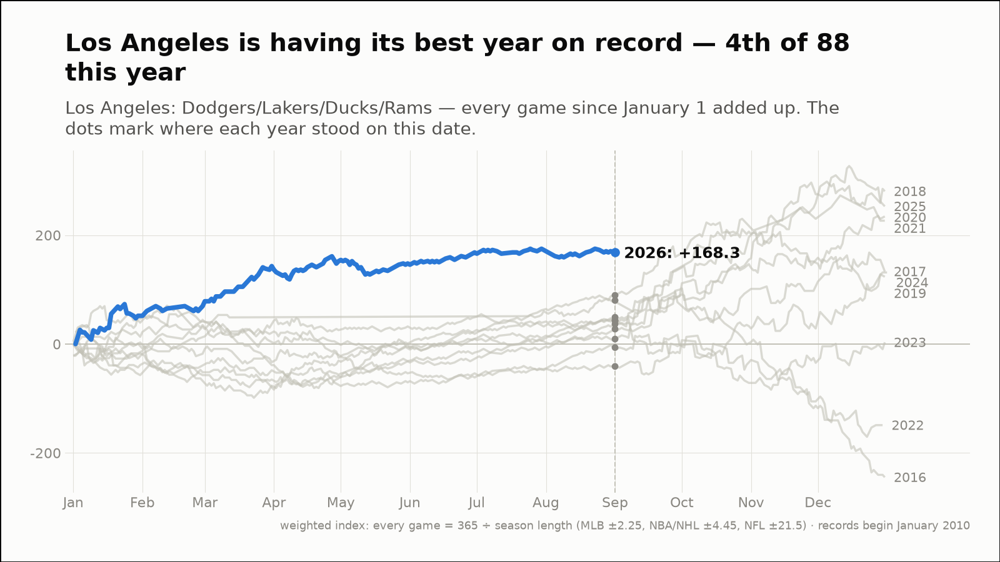
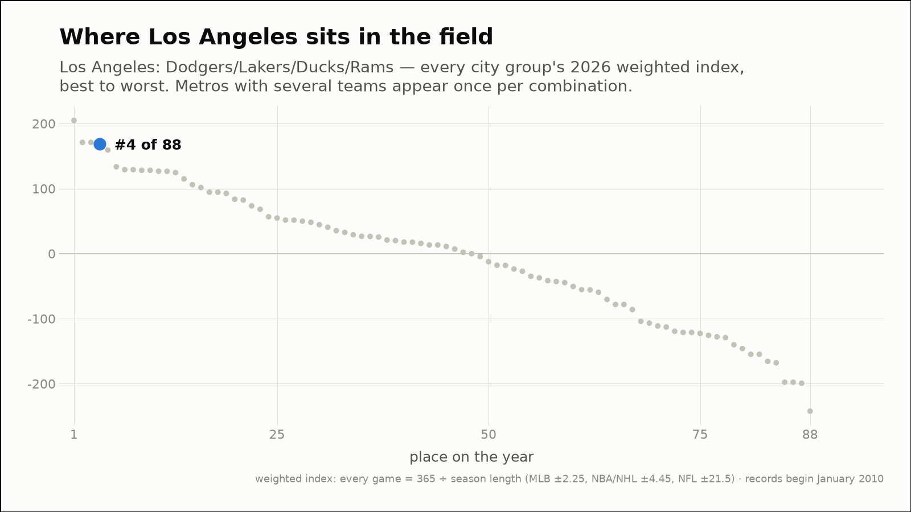
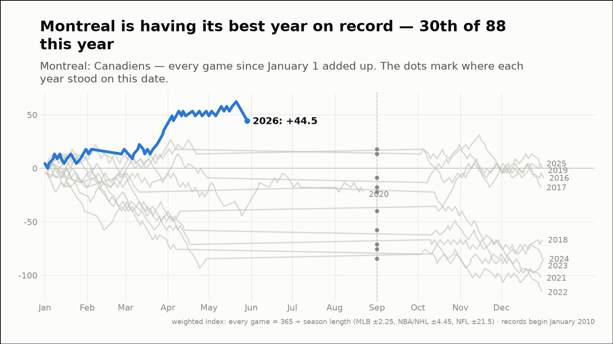
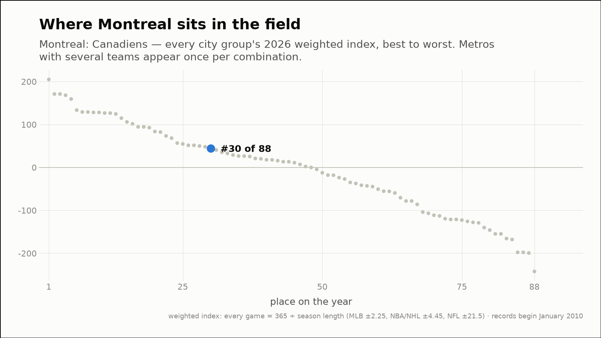
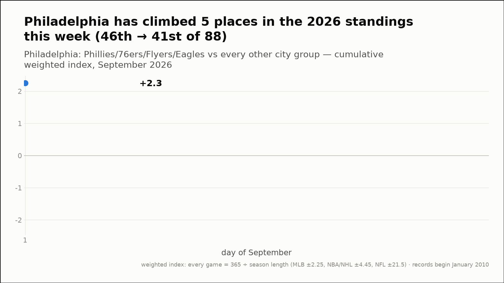
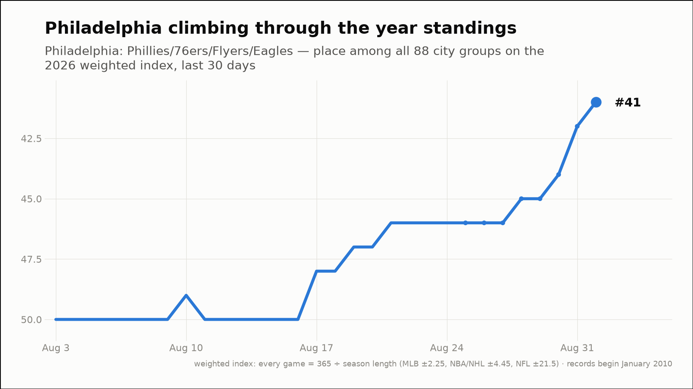
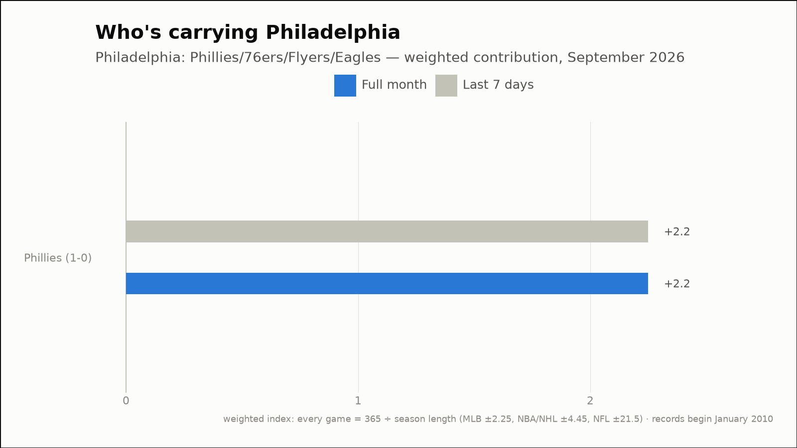

Out of the norm — three fandoms off their own script
The weekly hunt across all 88 city groups, through September 1, 2026
Los Angeles is having its best year on record — 4th of 88 this year
Los Angeles: Dodgers/Lakers/Ducks/Rams
- 2026 so far (through September 1)
- 150-107, +168.3 weighted — 1st-best of the 11 years on record, at the same point
- Against the field
- 4th of 88 city groups on the year (97th percentile)
- This month (through September 1)
- 0-1, -2.2 weighted
- Last 7 days
- 0-1, -2.2 weighted
- Driving it this week
- Dodgers (0-1, -2.2)


Montreal is having its best year on record — 30th of 88 this year
Montreal: Canadiens
- 2026 so far (through September 1)
- 36-26, +44.5 weighted — 1st-best of the 11 years on record, at the same point
- Against the field
- 30th of 88 city groups on the year (67th percentile)


Philadelphia has climbed 5 places in the 2026 standings this week (46th → 41st of 88)
Philadelphia: Phillies/76ers/Flyers/Eagles
- Year standings
- 46th → 41st of 88 (+4.2 → +17.7 weighted)
- This month (through September 1)
- 1-0, +2.2 weighted
- Last 7 days
- 1-0, +2.2 weighted
- Driving it this week
- Phillies (1-0, +2.2)


